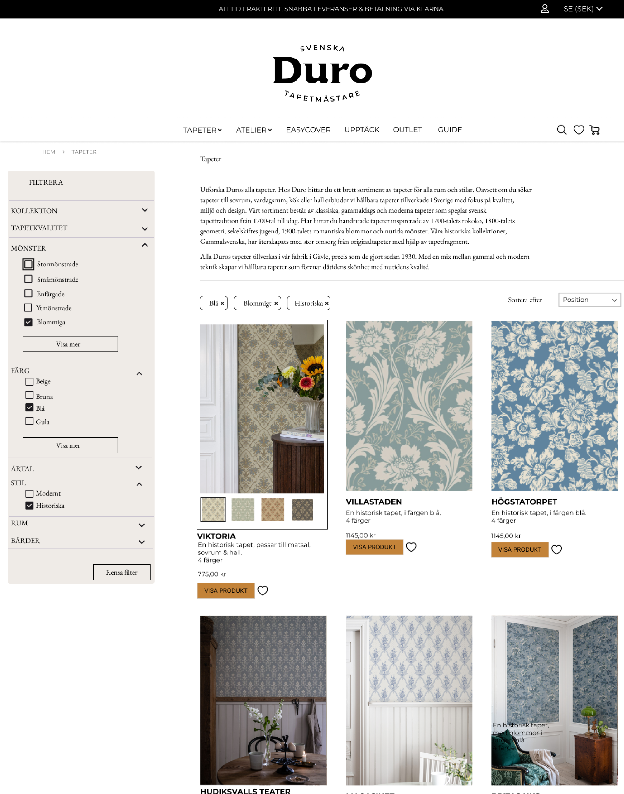
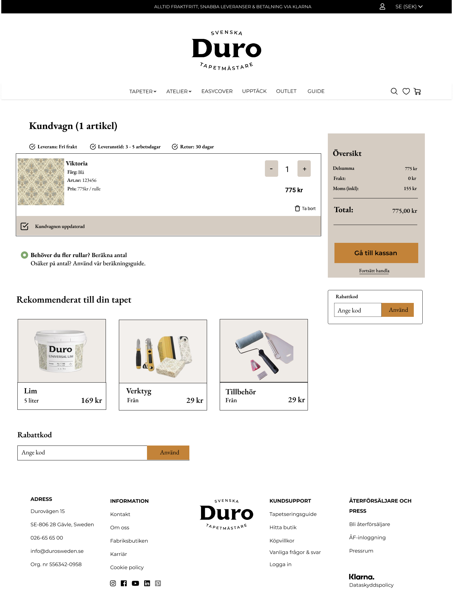

Duro Sweden, wallpaper shopping that welcomes everyone
Redesigned Duro Sweden's website to meet WCAG requirements and make browsing, comparing, and choosing wallpapers faster and easier. Improved navigation clarity, readability, and key decision points across the journey.
Overview
Duro Sweden is a wallpaper company with a large catalogue, but the website made it harder than it should be to discover patterns, compare options, and feel confident before making a purchase. In this project, I worked as an Experience Design student and was responsible for the full UX process, from research and structure to interaction design and UI decisions. I focused on two main goals: improving accessibility according to WCAG guidelines and improving usability so users could browse and choose wallpapers more easily. This was important because buying wallpaper depends on visual details, trust, and clear support in decision-making, and the existing experience created unnecessary friction. The final concept resulted in a clearer user flow, better accessibility, and a calmer, more user-friendly way to explore the catalogue.
Problem
Children ages 5 to 10 did not immediately understand how to navigate inside the product, which led to confusion, random tapping, and frequent requests for adult help. Key actions competed for attention, so kids missed what mattered and struggled to recover when they took a wrong turn. The experience before hitting play felt unclear and unmotivating, which weakened early engagement. Parents and teachers also needed to feel confident that kids could use the product independently.
Solution
We designed an interactive navigation model that teaches kids what to do through clear visual hierarchy, tap feedback, and predictable patterns across screens. We introduced kid readable cues like consistent icon placement, big tap targets, and a simple back path that always returns to a safe home. We also shaped the pre play experience into a short, motivating setup that shows progress and invites action instead of asking kids to decide too much at once. Usability testing validated the changes and guided refinements to labels, icons, and screen pacing.
Goals
The project started with a clear need, children should move through the product confidently without relying on adults. At the same time, the interface had to respect how kids explore, they tap first and read later, and they need fast confirmation that they did the right thing. We also wanted to make the moments before play feel rewarding, so kids stayed curious instead of getting stuck in choice paralysis. Finally, we needed an experience that parents and teachers could trust, with navigation that felt safe, consistent, and easy to explain.
Reflection
Overall, this project was a valuable learning experience that allowed me to apply my UX design skills to a real-world problem and create a solution that improved the user experience for Duro Sweden's customers. I am proud of the work I did and the impact it had on the company's website.
Interviews
I conducted semi-structured interviews to learn how people browse for wallpapers, what information they rely on, and where they feel unsure during the selection process. I spoke with participants who had recently bought home decor online or searched for wallpapers, focusing on the target group and including a mix of ages. I also asked questions about accessibility, such as readability, navigation, and situations where websites feel tiring or hard to use. The interviews helped me map key decision points—like filtering, shortlisting, and comparing—and turn them into concrete UI requirements. Based on the findings, I prioritized improvements to navigation clarity, content scanning, and accessible interaction patterns.
Finding 1
Users need clearer navigation and more control over filtering
Users struggled to find their way through the catalogue and felt limited by the filtering options. They wanted clearer cues about where they were in the browsing process and more flexibility to narrow down choices without feeling stuck.
Finding 2
Lack of Overview and Clear Structure
Users were often unsure of their current location on the page, and the visual hierarchy made it difficult to quickly grasp the overall structure. Clearer layout and organization would improve orientation.
Finding 3
Accessibility barriers create fatigue long before checkout
Low contrast text, unclear focus states, and inconsistent headings made browsing feel harder, especially during long exploration sessions.
UI Design
I designed the UI to feel calm and product-focused, while making the structure and controls crystal clear. I improved accessibility by ensuring text had sufficient contrast, focus states were visible, and labels were meaningful. I strengthened the catalogue experience with clearer filter placement and more prominent selected states. I prioritized the information users needed most and added descriptive text under the wallpapers to align with WCAG 2.1 guidelines. Throughout the redesign, I used consistent components and spacing to reduce cognitive load and help users stay oriented during long browsing sessions.



Usability testing
I tested an interactive prototype with participants who matched the browsing and purchase intent patterns from interviews. I asked them to complete realistic tasks, like finding a wallpaper for a specific room and narrowing choices with filters. I observed navigation paths, misclicks, scanning time, and where people hesitated or backtracked. The tests confirmed that clearer hierarchy and improved filtering reduced wandering, but also showed where users needed stronger feedback and clearer comparison cues. I iterated by refining labels, states, and the product details layout to better match how users evaluate options.
Problem 1
Users couldn’t select more than one option for filtering,
which frustrated them.
Solution 1
We introduced a checkbox based filter so users could confidently choose more than one option without second guessing.
To keep their selections visible and easy to manage, we added chips that show what’s selected and let users remove options in a tap.
Business Impact
The redesign supports Duro Sweden’s business goals by making the catalogue easier to explore and more inclusive for a wider range of customers. By reducing friction in browsing and improving confidence on product pages, the experience encourages deeper engagement with the range and helps users reach a decision with less doubt. WCAG-aligned improvements also reduce risk and improve brand trust, especially for users who rely on accessible navigation and readable content. Overall, the concept positions Duro as a quality-focused brand that cares about both aesthetics and usability.